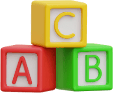
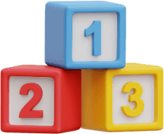
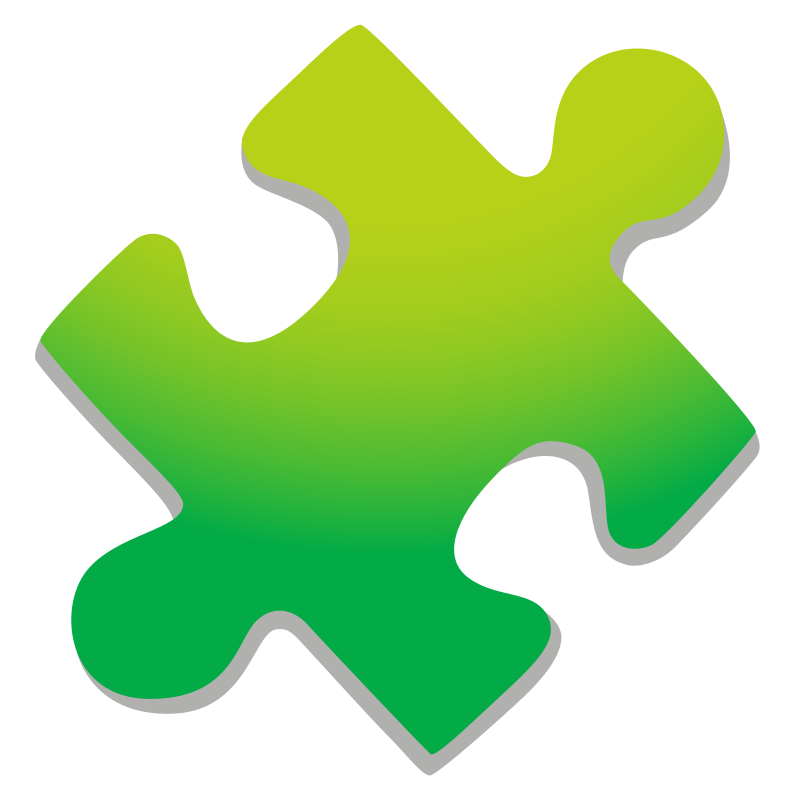

Vamos Brincar e Aprender
Escolhe o teu ano e diverte-te!

Este portal é um projeto de iniciativa pessoal, desenvolvido de forma amadora e sem fins lucrativos, com o objetivo de partilhar recursos digitais educativos e lúdicos para a Educação Pré-Escolar e 1º Ciclo.
Sendo um projeto independente de desenvolvimento pessoal nos tempos livres, agradeço que se detetar qualquer erro de programação ou imprecisão pedagógica, entre em contacto para podermos retificar.
Foi feito um esforço de design para tornar o portal responsivo, procurando a melhor compatibilidade com telemóveis, tablets, computadores e quadros interativos.
Por norma, cada jogo pode ser constituído por vários minijogos ou níveis distintos. Tentou-se que não houvesse repetições mesmo jogando várias vezes seguidas.